◆活動舉辦期間◆
2018年4月18日(三) 17:00～4月29日(日) 11:59
◆活動概要◆
舉辦期間限定活動「復刻:星之三藏醬，遠赴天竺 輕量版」！
是夢還是現實，誤闖進西遊記世界的Master能否平安無事地走到天竺呢？
本次活動中，必須消耗關鍵道具「功德符」來推進故事。
在活動關卡收集「功德符」，推進主線關卡吧！
另外，推進主線關卡至最後會開放自由關卡「悟法之旅」、「六道輪廻」。
向瞄準稀有素材獲得的自由關卡「六道輪廻」挑戰必須消耗關鍵道具「功徳玉」。
在自由關卡「悟法之旅」收集「功徳玉」與「大蓮華」，在「六道輪廻」收集「大蓮華」，得到豪華報酬吧！
※本活動為再調整2016年舉辦的期間限定活動「星之三藏醬，遠赴天竺」更容易遊玩的「復刻輕量版活動」。
◆活動參加條件◆
只限通過「特異點F 炎上汙染都市 冬木」的Master才能參加
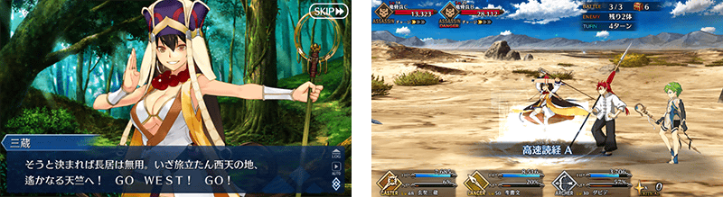
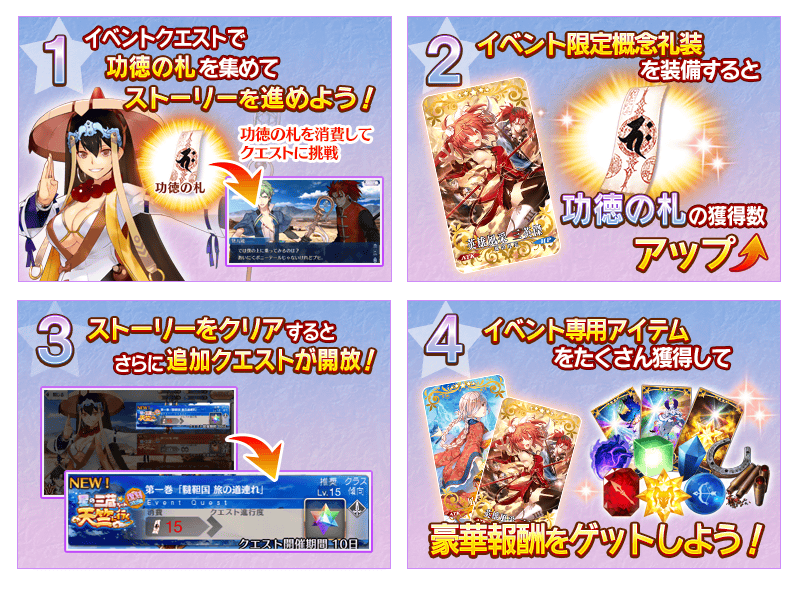
◆主線關卡◆
享受故事的主線關卡為通過前一卷後開放。
※請注意主線關卡的進行在序幕以後，關卡開始時必須以「功德符」做為AP的代替。
| 主線關卡 | 消耗 |
|---|---|
| 序幕 | - |
| 第一卷 | 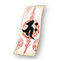 功德符×15 |
| 第二卷 | 功德符×40 |
| 第三巻 | 功德符×80 |
| 第四卷 | 功德符×200 |
| 第五卷 | 功德符×250 |
| 第六卷 | 功德符×300 |
| 最終卷 | 功德符×400 |
◆自由關卡◆
通過主線關卡的「序幕」後會開放可收集活動専用道具的自由關卡「修行之旅」。
之後的自由關卡「修行之旅」為通過主線關卡依序開放下個階級。
※開放自由關卡「悟法之旅」必須通過主線關卡的「最終卷」。
另外，「悟法之旅 菩薩級」「悟法之旅 如來級」必須通過主線關卡的「最終卷」再加上通過前一個階級。
※自由關卡「六道輪廻」為通過主線關卡的「最終卷」後會開放「天道」以外的自由關卡。
※有關「六道輪廻 天道」的開放必須通過主線關卡「最終卷」再加上「六道輪廻」從「人間道」至「地獄道」的所有關卡。
還有，、「六道輪廻 天道」為一次限定的關卡，通過後會消失。
| 自由關卡 | 消耗 |
|---|---|
| 修行之旅 初級 | AP20 |
| 修行之旅 中級 | AP25 |
| 修行之旅 上級 | AP30 |
| 修行之旅 超級 | AP40 |
| 修行之旅 火焔山級 | AP40 |
| 修行之旅 天竺級 | 功德符×100 |
| 悟法之旅 明王級 | AP40 |
| 悟法之旅 菩薩級 | AP40 |
| 悟法之旅 如来級 | AP40 |
| 六道輪廻 人間道 | 功徳玉×100 |
| 六道輪廻 修羅道 | 功徳玉×110 |
| 六道輪廻 畜生道 | 功徳玉×120 |
| 六道輪廻 餓鬼道 | 功徳玉×130 |
| 六道輪廻 地獄道 | 功徳玉×140 |
| 六道輪廻 天道 | 功徳玉×150 |
※在「悟法之旅」無法入手「功德符」。
※在「修行之旅 天竺級」及「六道輪廻」無法入手「功德符」「功徳玉」。

◆超值攻略方法・其1◆
4月19日(四) 17:00以後，向通過主線關卡「序章」的Master對象開放可大量獲得「功德符」和「功徳玉」的加成關卡。
各加成關卡初次通過後就會消失。
整備好隊伍，挑戰關卡吧！
| 關卡名 | 入手道具 | 時間表 |
|---|---|---|
| 【1回限定】桃源郷 其1 | 4月19日(四) 17:00～ 4月29日(日) 11:59 | |
| 【1回限定】桃源郷 其2 | 4月19日(四) 17:00～ 4月29日(日) 11:59 | |
| 【1回限定】桃源郷 其3 | 4月20日(五) 17:00～ 4月29日(日) 11:59 | |
| 【1回限定】桃源郷 其4 | 4月20日(五) 17:00～ 4月29日(日) 11:59 | |
| 【1回限定】桃源郷 其5 | 4月21日(六) 17:00～ 4月29日(日) 11:59 | |
| 【1回限定】桃源郷 其6 | 4月21日(六) 17:00～ 4月29日(日) 11:59 | |
| 【1回限定】桃源郷 其7 | 4月22日(日) 17:00～ 4月29日(日) 11:59 | |
| 【1回限定】桃源郷 其8 | 4月22日(日) 17:00～ 4月29日(日) 11:59 | |
| 【1回限定】桃源郷 其9 | 4月23日(一) 17:00～ 4月29日(日) 11:59 | |
| 【1回限定】桃源郷 其10 | 4月23日(一) 17:00～ 4月29日(日) 11:59 | |
| 【1回限定】桃源郷 其11 | 4月24日(二) 17:00～ 4月29日(日) 11:59 | |
| 【1回限定】桃源郷 其12 | 4月24日(二) 17:00～ 4月29日(日) 11:59 | |
| 【1回限定】桃源郷 其13 | 4月25日(三) 17:00～ 4月29日(日) 11:59 | |
| 【1回限定】桃源郷 其14 | 4月25日(三) 17:00～ 4月29日(日) 11:59 |
◆超值攻略方法・其2◆
將特定Servant放入隊伍的話，會提升在期間限定活動「復刻:星之三藏醬，遠赴天竺 輕量版」中活動専用道具「金丹」「仙桃」「肉包」「大蓮華」的掉落獲得量。
※請注意各關卡的道具掉落率並非100％。
※自4月16日(一) 17:00，在Servant選擇畫面和Servant強化畫面等中，追加「下次活動對象」篩選器。
由於是只顯示於下個舉辦活動活躍Servant的便利功能，敬請活用。
【對象Servant】
| 職階 | 稀有度 | Servant名 |
|---|---|---|
| Saber | ★★★★★ | 莫德雷德 |
| Archer | ★★★★★ | 阿周那 |
| ★★★ | 尤瑞艾莉 | |
| ★★★ | 大衛 | |
| Lancer | ★★★★★ | 迦爾納 |
| ★★★★ | 阿爾托莉亞・潘德拉剛〔Alter〕 | |
| ★★★★ | 哪吒 | |
| ★★★★ | 李書文 | |
| Rider | ★★★ | 美杜莎 |
| Caster | ★★★★★ | 玄奘三藏 |
| ★★★★★ | 諸葛孔明〔埃爾梅羅II世〕 | |
| Assassin | ★★★★ | 新宿的Assassin |
| ★★★★ | 絲西娜 | |
| ★★★★ | 不夜城的Assassin | |
| ★★★ | 荊軻 | |
| Berserker | ★★★★★ | 南丁格爾 |
| ★★★ | 呂布奉先 |
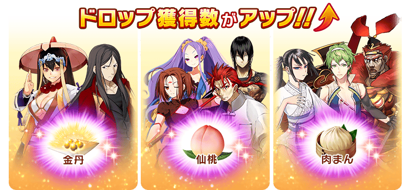

◆超值攻略方法・其3◆
裝備可在活動道具交換入手的活動限定概念禮裝「英雄風采 三英傑」「風雲仙姫」的話，會提升在期間限定活動「復刻:星之三藏醬，遠赴天竺 輕量版」中活動専用道具「功德符」的掉落獲得數、「功徳玉」的追加掉落率。
另外，裝備可做為活動關卡通過報酬獲得的活動限定概念禮裝「九首牛魔羅王」的話，會提升期間限定活動「復刻:星之三藏醬，遠赴天竺 輕量版」中活動専用道具「大蓮華」的掉落獲得數。
※請注意各關卡的道具掉落率並非100％。
※請注意各關卡的道具掉落率顯示為100％以上的情況，效果仍為100％。
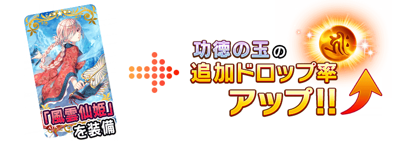
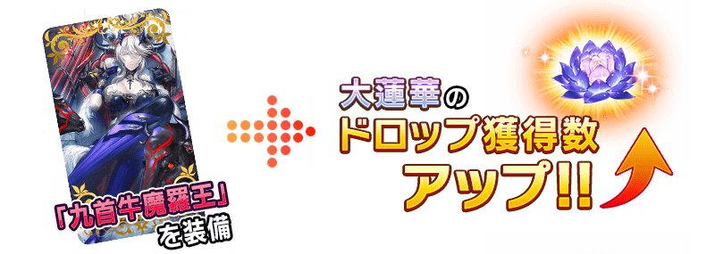
◆超值攻略方法・其4◆
裝備於聖晶石召喚Pick Up的期間限定概念禮裝「Go West!!」「三昧真火」「三色兼備」的話，會提升期間限定活動「復刻:星之三藏醬，遠赴天竺 輕量版」中活動専用道具「金丹」「仙桃」「肉包」「大蓮華」的掉落獲得數。
※請注意各關卡的道具掉落率並非100％。
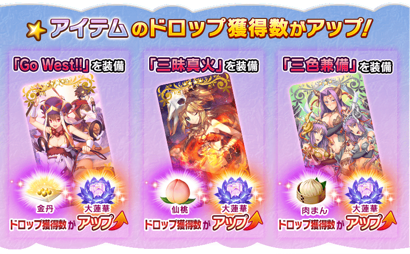
| 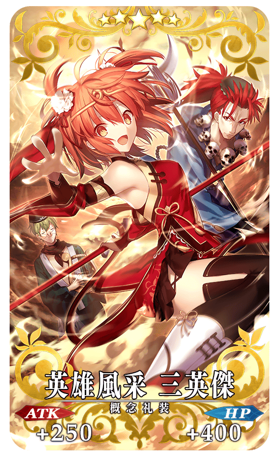 |
★★★★★SSR |
| 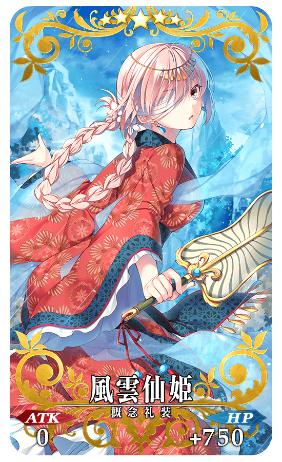 |
★★★★★SSR |
| 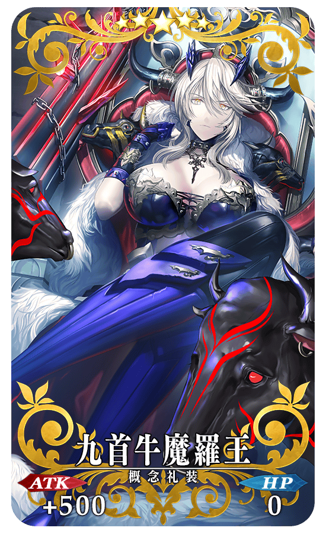 |
★★★★★SSR |
◆交換方法◆
交換期限:4月18日(三) 17:00～5月6日(日) 11:59
※交換期間結束後「金丹」「仙桃」「肉包」「大蓮華」「功德符」「功徳玉」會消失。
活動専用道具可自點擊管理室(ターミナル)畫面右上「活動報酬」的「活動道具交換」畫面，交換以下的道具。
※英靈結晶・流星之芙芙ALL★4(HP)、英靈結晶・日輪之芙芙ALL★4(ATK)的交換會在通過期間限定活動「復刻:星之三藏醬，遠赴天竺 輕量版」的主線關卡後開放。
※請注意「大蓮華」的入手及交換是在通過期間限定活動「復刻:星之三藏醬，遠赴天竺 輕量版」主線關卡後。
◆能用金丹交換的道具◆
| 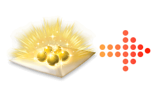 |
【活動限定概念禮裝】 【技能強化＆靈基再臨素材】 【技能強化素材】 【其他道具】 |
◆能用仙桃交換的道具◆
| 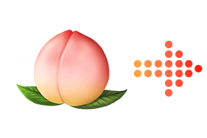 |
【活動限定概念禮裝】 【技能強化＆靈基再臨素材】 【技能強化素材】 【其他道具】 |
◆能用肉包交換的道具◆
| 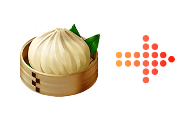 |
【活動限定概念禮裝】 【技能強化＆靈基再臨素材】 【技能強化素材】 【其他道具】 |
◆能用大蓮華交換的道具◆
|
【活動限定概念禮裝】 【技能強化＆靈基再臨素材】 【其他道具】 |
◆能用功德符・功徳玉交換的道具◆
 |
【其他道具】 |
以通過「復刻:星之三藏醬，遠赴天竺 輕量版」的主線關卡及「終局特異點」的Master為對象開放高難易度的「挑戰關卡」。
「挑戰關卡」就算通過後也不會消失，能無數次挑戰，可以變更Servant和概念禮裝的組合後再次挑戰。
※關卡通過報酬、戰利品、Master經驗值、魔術禮裝經驗值、絆點數只可在初次通過時獲得。
◆挑戰關卡參加條件◆
只限通過「復刻:星之三藏醬，遠赴天竺 輕量版」的主線關卡及「終局特異點」的Master才能參加
◆挑戰關卡初次通過報酬◆
傳承結晶 1個
◆「復刻 星之三藏醬，遠赴天竺Pick Up召喚(每日交替)」期間◆
期間:2018年4月18日(三) 17:00～4月29日(日) 11:59
舉辦期間限定「復刻 星之三藏醬，遠赴天竺Pick Up召喚(每日交替)」！
「★5(SSR)玄奘三藏」與「★5(SSR)諸葛孔明〔埃爾梅羅II世〕」Pick Up！
變更在2016年舉辦的「星之三藏醬，遠赴天竺Pick Up召喚」一部份内容進行復刻。
本次包含上述2位，Pick Up9位的Servant！
「★5(SSR)玄奘三藏」「★5(SSR)諸葛孔明〔埃爾梅羅II世〕」以每日交替Pick Up，「★4(SR)哪吒」「★4(SR)李書文」「★4(SR)新宿的Assassin」「★4(SR)不夜城的Assassin」「★3(R)大衛」「★3(R)荊軻」「★3(R)呂布奉先」常駐Pick Up！
※Pick Up Servant就算Pick Up期間結束後也會在故事召喚被抽出。
※Pick Up期間中，李書文就算通過第五特異點前也能入手。
※關於真名尚未判明的Servant，透過主線關卡的進行會讓Servant及一部份寶具的名稱變化。
詳情請在聖晶石召喚畫面左下的召喚詳細確認。
裝備期間限定概念禮裝「★5(SSR)Go West!!」「★4(SR)三昧真火」「★3(R)三色兼備」的話，會提升期間限定活動「復刻:星之三藏醬，遠赴天竺 輕量版」中活動専用道具的掉落獲得數。
※「★3(R)三色兼備」在Pick Up期間中，也能在友情點數召喚獲得。
※請注意自友情點數召喚抽出「★3(R)三色兼備」在自動變還設定登錄★3(R)概念禮裝的情況，會變成自動變還的對象。
Pick Up期間中，Pick Up Servant、期間限定概念禮裝的出現機率提升！
10次召喚中確定1張★4(SR)以上和確定1位★3(R)以上的Servant！
※確定★4(SR)以上包含Servant和概念禮裝。
| 每日交替Pick Up期間 | 每日交替Pick Up內容 |
|---|---|
| 4月18日(三) 17:00～ 4月19日(四) 22:59 |
玄奘三藏 諸葛孔明〔埃爾梅羅II世〕 |
| 4月19日(四) 23:00～4月20日(五) 22:59 | 玄奘三藏 |
| 4月20日(五) 23:00～4月21日(六) 22:59 | 諸葛孔明〔埃爾梅羅II世〕 |
| 4月21日(六) 23:00～4月22日(日) 22:59 | 玄奘三藏 |
| 4月22日(日) 23:00～4月23日(一) 22:59 | 諸葛孔明〔埃爾梅羅II世〕 |
| 4月23日(一) 23:00～4月24日(二) 22:59 | 玄奘三藏 |
| 4月24日(二) 23:00～4月25日(三) 22:59 | 諸葛孔明〔埃爾梅羅II世〕 |
| 4月25日(三) 23:00～ 4月29日(日) 11:59 |
玄奘三藏 諸葛孔明〔埃爾梅羅II世〕 |
※請注意會以每日交替變更Pick Up的Servant。
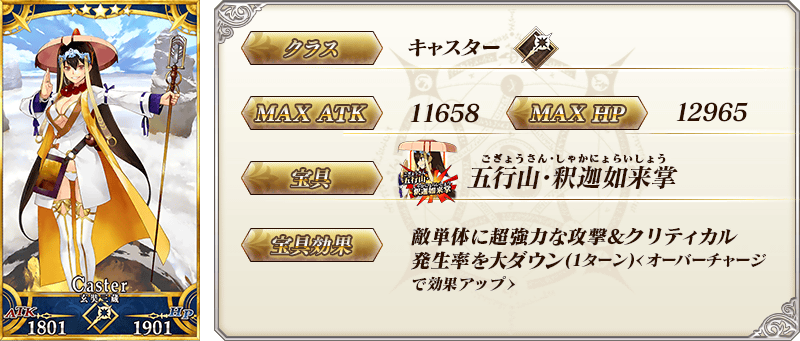
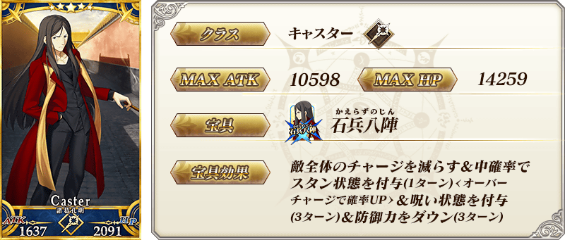
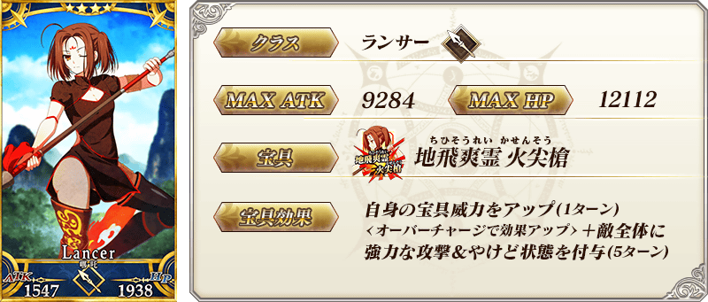
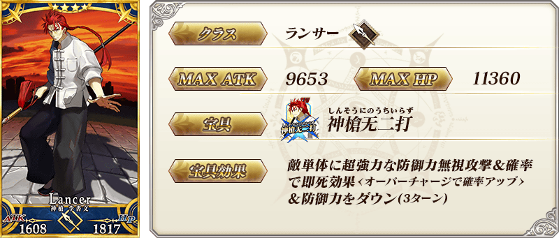


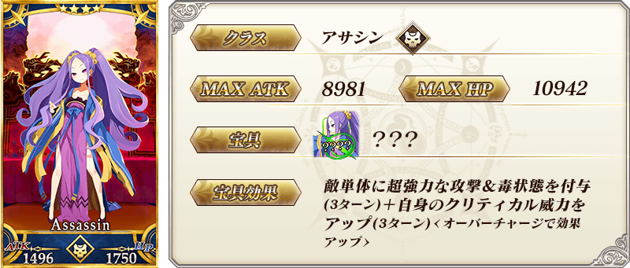
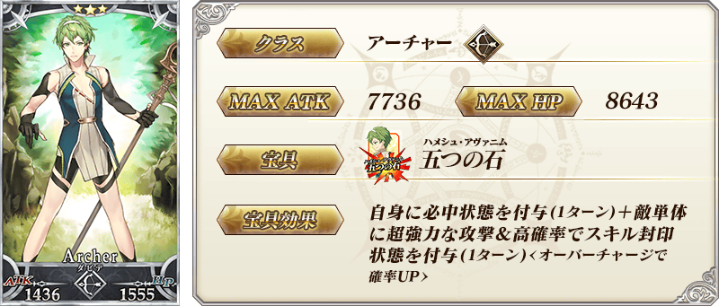

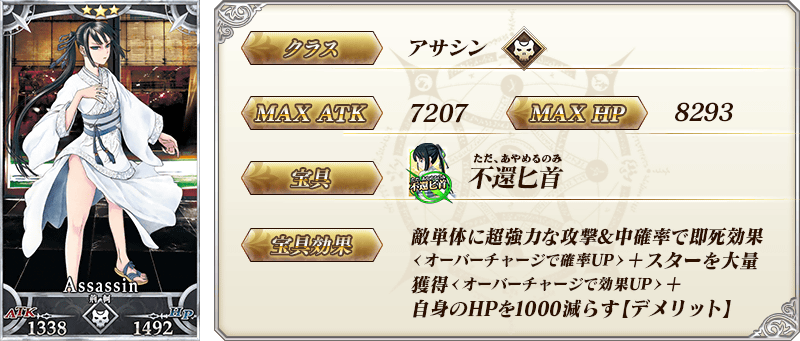
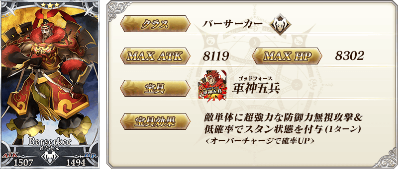
|
★★★★★SSR |
 |
★★★★SR |
| 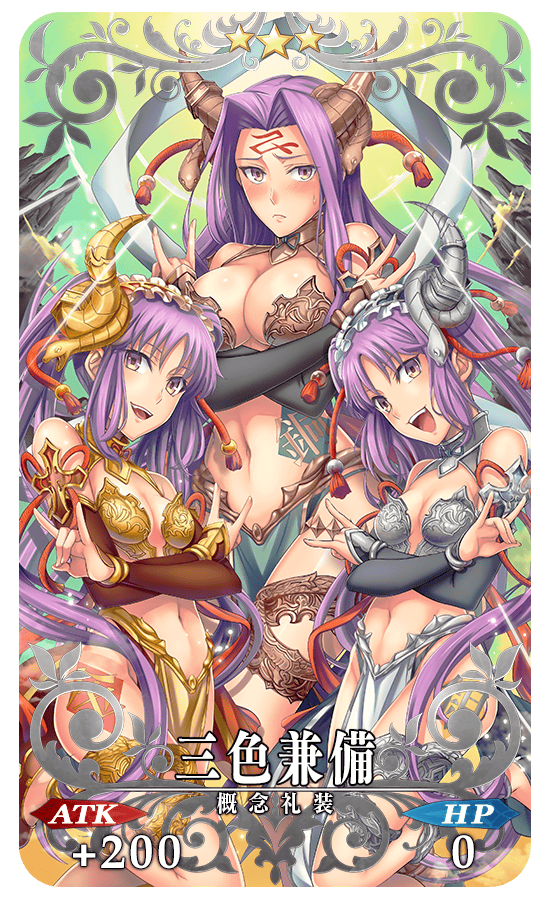 |
★★★R |

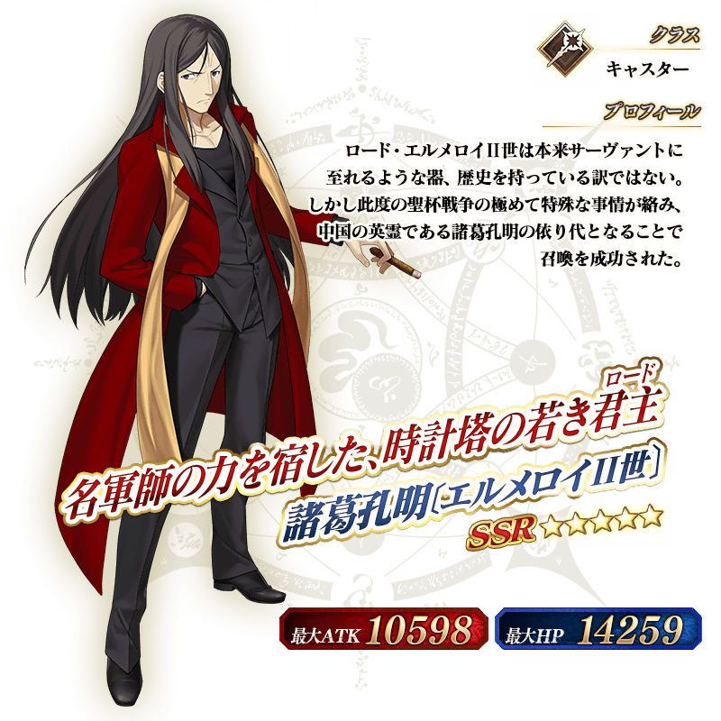
介紹玄奘三藏、諸葛孔明〔埃爾梅羅II世〕的寶具演出！
在「Fate/Grand Order」官方網站內的公告中，公開了「★5(SSR)玄奘三藏」「★5(SSR)諸葛孔明〔埃爾梅羅II世〕」的寶具演出。敬請確認。